Ce document répond au brief : technologies, vitesse, référencement Google, visibilité dans ChatGPT et les aperçus IA, structure du contenu, limites techniques. Chaque constat est suivi d'une proposition avec son intérêt, sa difficulté et son bénéfice attendu. Pas de refonte du design — le site a été refait récemment, on corrige le fonctionnement.
"atb groupe", "moteur atb", "analyse vibratoire spectrale". Le leader du secteur (Motralec) en a 1 900.
Les deux positions sont des requêtes de marque, pas de service. Le leader en a 748.
Base Ahrefs. Le leader en a 1 400.
En clair : quand un acheteur tape « réparation moteur électrique » ou « bobinage moteur » + sa ville, Google n'a rien à montrer d'ATB — alors que l'entreprise a 4 agences, un stock de plus de 2 000 moteurs et des certifications que la concurrence n'a pas. Le problème n'est pas le design ni la réputation : c'est qu'aucune page du site ne répond à ces questions, et que Google ne comprend pas bien ce qu'il a sous les yeux (pas de balise titre/description correcte, pas de carte du site, des adresses qui changent et finissent en erreur 404).
| Ville | Carte Google | Site dans Google | Qui passe devant |
|---|---|---|---|
| Rouen | 1ʳᵉ place | 3ᵉ place | DTMI — 1ʳᵉ place sur son site, « 24H/24 7J/7 » affiché |
| Évreux | 1ʳᵉ place | 1ʳᵉ place | — (ATB tient la position) |
| Caen | 2ᵉ place | hors 1ʳᵉ page | Chaplain et Mirey, visibles sur leur propre site |
| Lille (Seclin) | 8ᵉ place | non visible | Rossini Pierre (note 5,0), Espace Moteurs, SDB |
Les gens tapent déjà le nom ATB dans Google (« ATB Rouen », « Catalogue moteur ATB ») — la notoriété existe. Ce qui manque, ce sont les nouvelles recherches : service + ville.
Articles-guides ("montage étoile ou triangle") et pages par marque (Wilo, Grundfos…). C'est ce qui amène l'essentiel du trafic.
Le même type d'articles, mais écrits par les techniciens ATB, avec un lien vers l'agence la plus proche.
Pages dédiées "bobinage" et "réparation moteur électrique", téléphone en un clic, devis gratuit, balisage LocalBusiness complet.
Le meilleur modèle à copier dans le secteur — structure simple, reproductible sans refonte.
Un site simple, sans aucune technique avancée : juste "Lille" dans le titre et le H1, une page "Réparation moteur électrique", 6 avis à 5,0.
Même recette pour l'agence de Seclin : titre + page dédiée + avis clients.
"24H/24 & 7J/7" affiché directement dans la description Google.
Afficher la même urgence si ATB a (ou met en place) une astreinte — sinon ne pas le promettre.
Une page dédiée "rebobinage moteur" et des actualités de groupe publiées régulièrement.
Le modèle à suivre pour la page rebobinage (proposition 6) ; nos propres articles (proposition 10) jouent le même rôle.
Page "Expert de la réparation industrielle à Caen" avec des chiffres vérifiables : 85 ans, 35 techniciens itinérants.
Même logique pour la page Caen (proposition 7) : des chiffres exacts plutôt qu'une promesse vague.
À retenir : aucun concurrent n'a 4 agences, un stock de plus de 2 000 moteurs, un partenariat ABB et des certifications Saqr-ATEX/MASE à la fois. ATB a plus d'arguments que tous ses concurrents réunis — il faut juste les montrer à la recherche.
Joomla 5.4.10 (version récente), PHP 8.3, nginx derrière Plesk, hébergement OVH. Rien à reprocher ici : c'est à jour.
HabillageLes pages sont montées avec SP Page Builder sur un thème Shape5 "Charity" ancien et surchargé : jQuery UI, deux jeux de Bootstrap, trois jeux d'icônes et la police Open Sans chargée trois fois. Sur la page d'accueil : 25 fichiers CSS, 31 fichiers JS, et 156 Ko de style écrits directement dans le code de la page.
Formulaires et fenêtresFormulaire de contact sur ChronoForms, fenêtres surgissantes EngageBox, éditeur JCE Pro. La page d'accueil liste encore l'auteur par défaut Joomla Super User dans son code — jamais renommé, fuite d'information mineure mais gratuite.
| Mobile | Ordinateur | Objectif Google | |
|---|---|---|---|
| Score global | 48–64 / 100 | 65–92 / 100 | 90+ |
| Premier bloc visible (LCP) | 12,0 – 15,6 s | 2,2 – 2,6 s | ≤ 2,5 s |
| Décalage visuel (CLS) | 0,43 – 0,47 | 0,50 | ≤ 0,1 |
| Poids de la page | 3,6 Mo | — | |
Pourquoi c'est lent : la page d'accueil est un diaporama de 5 photos (908 Ko) posées en background-image sur un <div> plutôt qu'en <img> — Google ne peut pas les précharger, et les 5 se chargent en même temps. Pas de WebP, pas de chargement différé, pas de cache de page (réponse serveur ≈ 1 s à chaque visite), aucun en-tête de cache sur les images et le CSS.
Aucun numéro de téléphone n'est cliquable sur les 32 pages. Le menu mobile a des liens de 19 px de haut (la norme Google est 48 px). Pas de bouton "Contactez-nous" visible sur mobile. Le zoom par pincement est bloqué (maximum-scale=1).
Le serveur expose en plus la version exacte de PHP (X-Powered-By: PHP/8.3.36) et le panneau d'hébergement (PleskLin) à qui veut la lire. L'accès /administrator/ est ouvert à tous sans restriction d'IP. Rien de cassé, mais c'est une indication gratuite pour qui chercherait une faille — ça se corrige en une journée.
/components/, /modules/, /plugins/ dans le robots.txt.no-store, no-cache).fetchpriority="high", le reste en lazy-load.maximum-scale=1./administrator/ par IP ou mot de passe, ajouter la double authentification, retirer README.txt/htaccess.txt et les manifestes XML, masquer X-Powered-By.tel:) et ajouter un bouton Contact dans le menu mobile./components/, où se trouvent les styles et scripts du constructeur de pages./Intervention, /certifications/…) renvoient une erreur 404 alors que d'autres sites y pointent encore — le poids de ces liens est perdu./analyse-vibratoire-spectrale/ — en 404 : cette position est en train de se perdre.ChatGPT place ATB en premier sur une question en français pour un réparateur de moteur industriel à Rouen, Caen, Évreux ou Lille, avec les adresses et téléphones des 4 agences — devant DTMI, ERI ABEN, Decharenton et Rossini Pierre.
Les aperçus IA de Google citent ATB à Rouen, Caen et Évreux, mais pas à Lille. Les données viennent de LinkedIn, de l'annuaire sous-traiter.com et de data.gouv.fr — très peu du site lui-même, qui n'a ni réponses courtes, ni tableaux, ni données structurées à offrir.
L'ancienneté de l'entreprise est annoncée différemment selon les pages : 30, 40, 60 et 70 ans. Le stock est décrit comme "0,25–560 kW" sur la page d'accueil et "0,18–250 kW, plus de 2 000 moteurs" sur la page moteurs. ChatGPT reprend déjà "plus de 40 ans" d'un côté et "60 ans" de l'autre — un acheteur et une IA voient la même incohérence.
| Agence | Nom affiché | Avis | Problème |
|---|---|---|---|
| Rouen | Atelier Regional de Bobinage | 4,6 (11) | rien à signaler, ajouter photos et avis récents |
| Caen | A.R.B. Atelier Régional… | 4,5 (2, anciens) | fiche non revendiquée, catégorie "magasin d'électroménager" |
| Évreux | Atelier Technique de Bobinage | 4,2 (5) | catégorie "fabricant d'électronique" |
| Lille (Seclin) | Atelier Technique De Bobinage (Atb) | 3,8 (4) | catégorie "fournisseur d'équipements électriques" |
Les volumes de recherche restent modestes car c'est du B2B (ex. "réparation moteur électrique" : 150–300 recherches/mois en France, les requêtes avec une ville : 0 à 10 chacune) — mais un client industriel reste des années, et ce sont justement les requêtes les plus "chaudes".
| Requête | Recherches/mois |
|---|---|
| moteur électrique | 5 800 |
| moteur asynchrone / triphasé | 2 000 / 1 100 |
| maintenance prédictive | 1 300 |
| variateur de fréquence | 1 200 |
| motoréducteur | 700 |
| bobinage moteur (+ électrique) | 350 + 250 |
| réparation moteur électrique (variantes) | 150 + 300 |
| analyse vibratoire | 250 |
| moteur WEG / Siemens / ABB / Leroy-Somer | 150 / 150 / 100 / 100 |
| moteur ATEX | 80 |
| chaque requête + ville (ex. "bobinage Rouen") | 0 à 10 |
Classées par difficulté (faible : quelques heures à 2 jours / moyenne : 3 à 7 jours / continu : contenu à produire régulièrement) et par bénéfice attendu sur les demandes entrantes.
| # | Proposition | Intérêt | Difficulté | Bénéfice |
|---|---|---|---|---|
| 1 | Analytics, Search Console, suivi d'appels+ bannière cookies conforme CNIL | Voir qui visite, par quelle requête, et ce qui se transforme en appel — impossible à mesurer aujourd'hui. | Faible | Élevé |
| 2 | Nettoyage technique Googlesitemap, robots.txt, doublons, redirections des vieilles adresses | Google voit toutes les pages, comprend laquelle est la bonne, et récupère le poids des anciens liens. | Faible | Élevé |
| 3 | Titres, descriptions, H114 pages déjà rédigées, le reste sur le même modèle | L'action la plus rapide : le site commence à apparaître sur les services, pas que sur son nom. | Faible | Élevé |
| 4 | Vitesse mobilecache, WebP, 1ᵉʳ visuel préchargé, lazy-load, un seul Open Sans | Objectif : premier bloc visible à 2,5 s au lieu de 12–15 s, écran qui ne saute plus. | Moyenne | Élevé |
| 5 | Contact en un clictéléphones cliquables, bouton "Urgence 24h/24" si applicable, formulaire avec type de demande | Plus d'appels et de devis sur le même trafic, sans rien ajouter côté SEO. | Faible | Élevé |
| 6 | Pages services dédiéesrebobinage, réparation moteur, dépannage urgent, pompes, analyse vibratoire, ATEX | Aujourd'hui Google n'a rien à montrer sur ces requêtes : ce sont les concurrents qui apparaissent à la place. | Moyenne | Élevé |
| 7 | Pages par agenceRouen, Caen, Évreux, Lille (Seclin) | Les requêtes "service + ville" sont les plus chaudes — et c'est là qu'ATB est le plus absent (Caen, Lille). | Moyenne | Élevé |
| 8 | Fiches Google Maps / Bing et annuairesrevendiquer Caen, bonne catégorie partout, photos, collecte d'avis | Le bloc carte s'affiche au-dessus des résultats classiques — c'est ce qui convertit le plus vite sur les requêtes locales. | Faible | Élevé |
| 9 | Faits unifiés, preuves, données structuréesune seule version de l'ancienneté et du stock, numéros de certificats, 3–5 exemples de chantiers, JSON-LD Organization/LocalBusiness par agence | Rassure un acheteur qui vérifie un sous-traitant, et donne aux IA des faits cohérents à citer. | Faible à moyenne | Moyen à élevé |
| 10 | Articles-guides et mentions sur sites partenairessous les questions clients réelles, publiés sur le site puis relayés (ABB, salons, LinkedIn) | C'est ce qui fait l'essentiel du trafic du leader du secteur, et ce que les IA citent le plus souvent en source. | Continu | Élevé |
| Page | Titre | H1 |
|---|---|---|
| Accueil | Réparation et rebobinage de moteurs électriques | ATB Groupe | Réparation de moteurs électriques industriels |
| Moteurs ATEX | Moteurs ATEX : réparation et vente | ATB Groupe | Réparation de moteurs ATEX certifiés |
| Variateurs de fréquence | Variateurs de fréquence : vente et SAV | ATB Groupe | Variateurs de fréquence pour l'industrie |
| Contact | Contacter ATB Groupe — 4 agences en France | Contactez votre agence ATB Groupe |
+ 10 autres pages déjà rédigées dans le même format (titre, description, H1) — prêtes à poser dès l'accès au site.
tel: sur les 32 pages, les boutons "Nous contacter" renvoient vers une URL technique (/component/content/article/199-contactez-nous), le seul formulaire est en bas de la page /contact avec un captcha "4 + 6 = ?", et l'urgence 24h/24 n'est mentionnée qu'une seule fois sur tout le site.| Page | Potentiel |
|---|---|
| Analyse vibratoire (nouvelle) | ~1 600 |
| Rebobinage moteur électrique (nouvelle) | ~960 |
| Réparation moteur électrique (nouvelle) | ~710 |
| Réparation de pompe industrielle (nouvelle) | ~160 |
| Dépannage urgent 24h/24 (nouvelle) | ~100 |
| Moteurs et réparation ATEX (nouvelle) | ~80 |
| 4 pages agences (nouvelles) | 0–10 chacune, les plus "chaudes" |
| Pages existantes à renforcer (moteurs, variateurs, réducteurs, démarreurs, alternateurs) | ~3 700 / 1 350 / 790 / 250 / 120 déjà en jeu |
| Pages marques — WEG, Siemens, ABB, Leroy-Somer (2ᵉ mois) | ~500 |
| Pari | Vérification |
|---|---|
| Catégorie/avis/fiches → carte Google à Caen et Lille | position carte + réponse ChatGPT, vérifiées chaque semaine |
| Pages service + ville → apparition sur des requêtes où le site est absent | impressions/clics dans Search Console, une fois branché |
| Titres/descriptions/H1 → apparition sur les services, pas que sur le nom | nombre de requêtes et d'impressions, Search Console |
| Faits unifiés + balisage → moins d'erreurs citées par les IA, plus de mentions hors ville | mêmes 10 questions reposées une fois par mois à ChatGPT / aperçus IA / Perplexity |
| Téléphone cliquable + formulaire court → plus de clics transformés en appel | clics téléphone/formulaire suivis dans l'analytics dès la 1ʳᵉ semaine |
Si des demandes sont nécessaires dès la première semaine : option séparée de publicité Google sur les 10–15 requêtes "réparation moteur électrique" + ville, où aucune annonce ne tourne aujourd'hui — clic estimé entre 0,15 et 0,50 $ (Ahrefs). Service distinct, budget média et décision à la charge d'ATB.
Limite technique à garder en tête : le thème Shape5 "Charity" reste lourd par nature. Si, une fois les actions ci-dessus faites, la vitesse mobile reste dans le rouge, il faudra remplacer le thème par un plus léger — sans changer l'apparence. Dernier point : des polices sont chargées depuis les serveurs Google et il n'y a pas de bandeau cookies ; avant de brancher l'analytics (proposition 1), il faut ce bandeau pour rester conforme CNIL.
Motralec doit l'essentiel de ses 4 500 visites/mois à des guides du type « montage étoile ou triangle » ou « qu'est-ce qu'un variateur de vitesse ». ATB peut écrire les mêmes, mais avec un vrai avantage : des techniciens qui réparent ces moteurs tous les jours, et une agence à citer en bas de chaque article.
Les 30 sujets déjà identifiés et classés par page de destination, ci-dessous. Les 8 en couleur sont les plus proches d'une demande de devis — on démarre par ceux-là.
Les articles vivent sur le site (rubrique Actualités, aujourd'hui vide — les nouvelles ne sont publiées que sur LinkedIn) puis sont relayés vers les partenaires déjà acquis (ABB, salons SEPEM et CFIA) et les sites qui citent déjà ATB.
Mesures prises le même jour, sur le site en production : Chrome DevTools (onglet Réseau et Performance), Google Lighthouse mobile et ordinateur, Security Headers (snyk.io) et le validateur W3C.
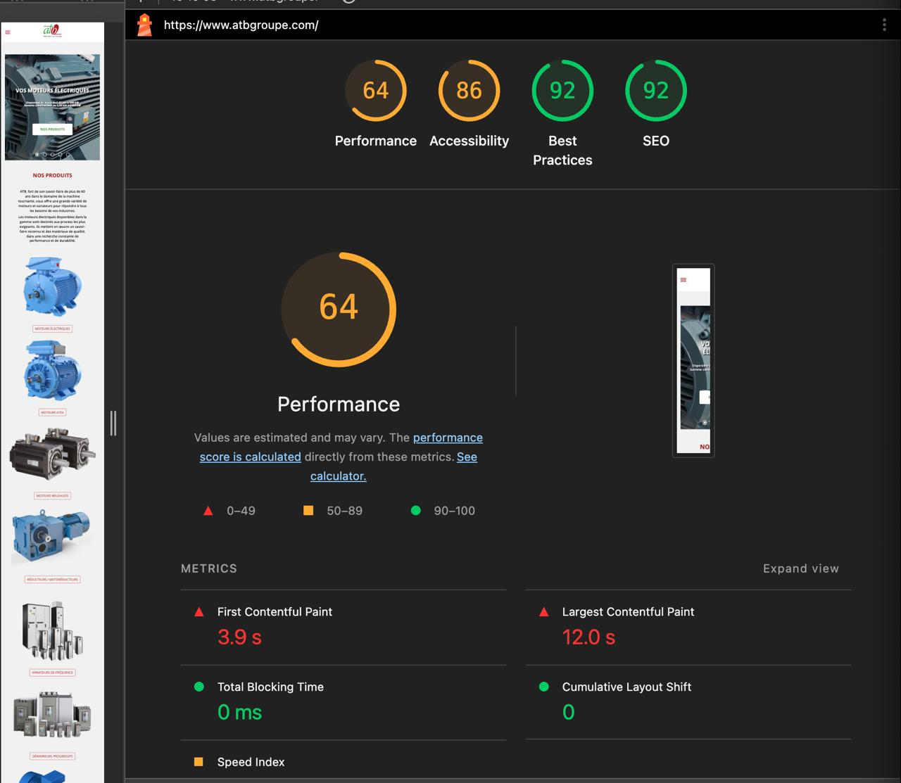
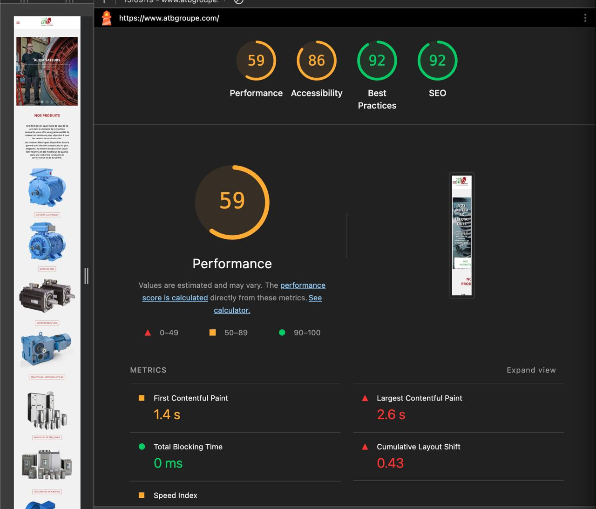
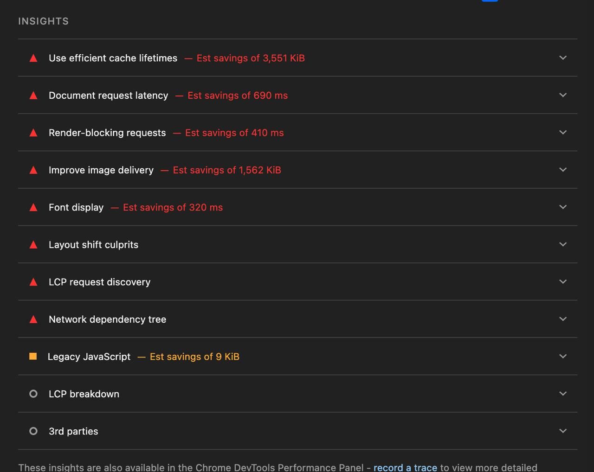
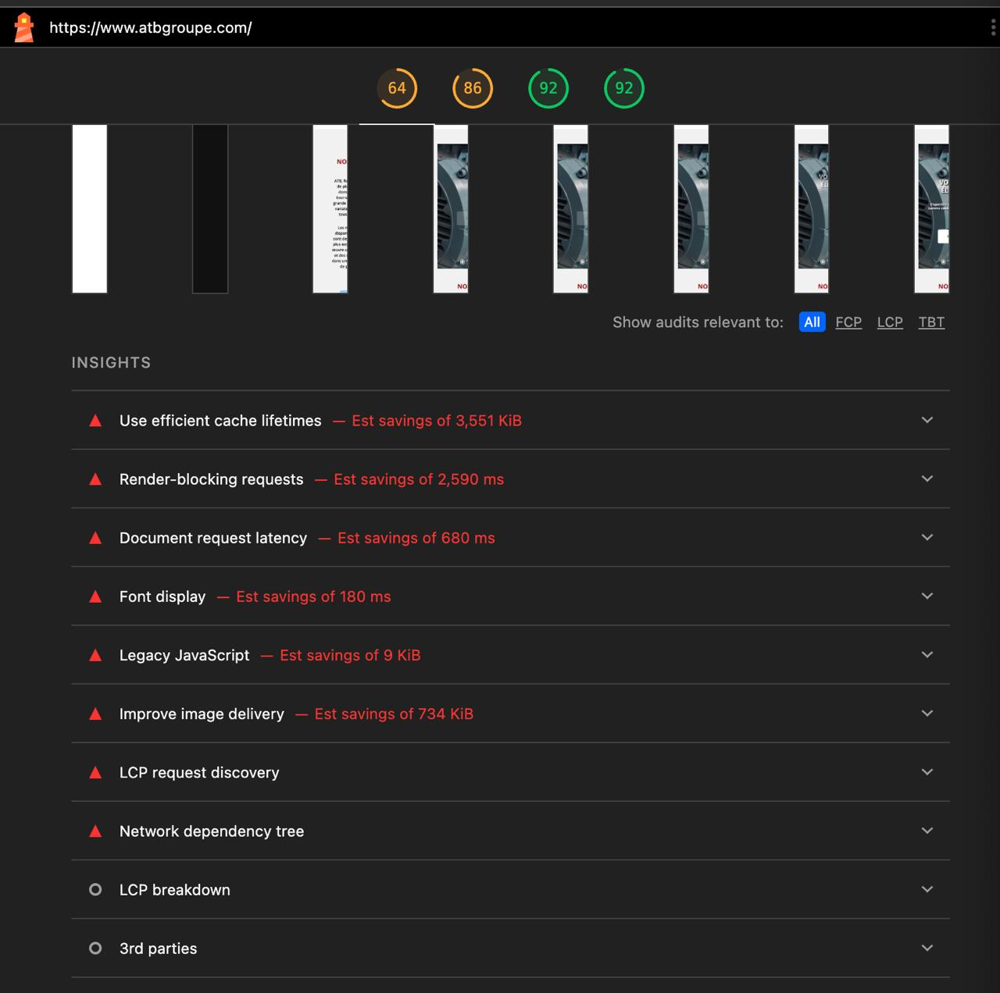
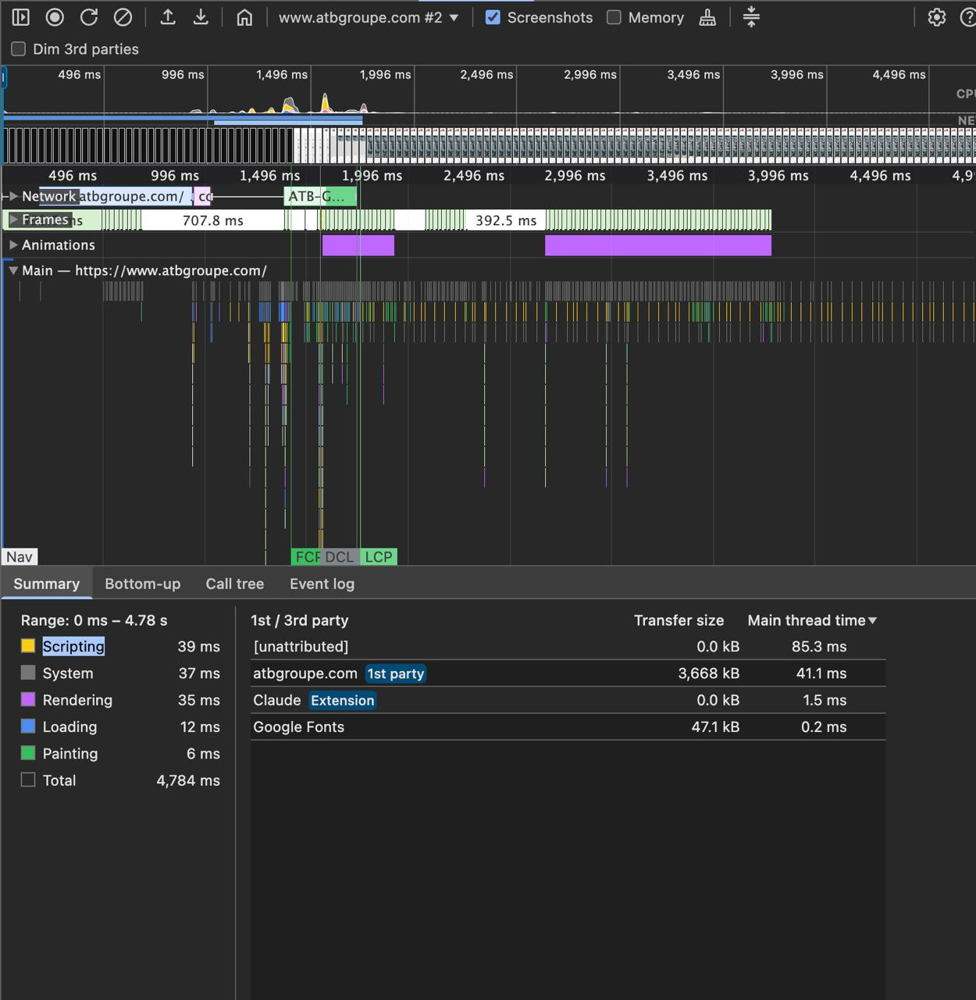
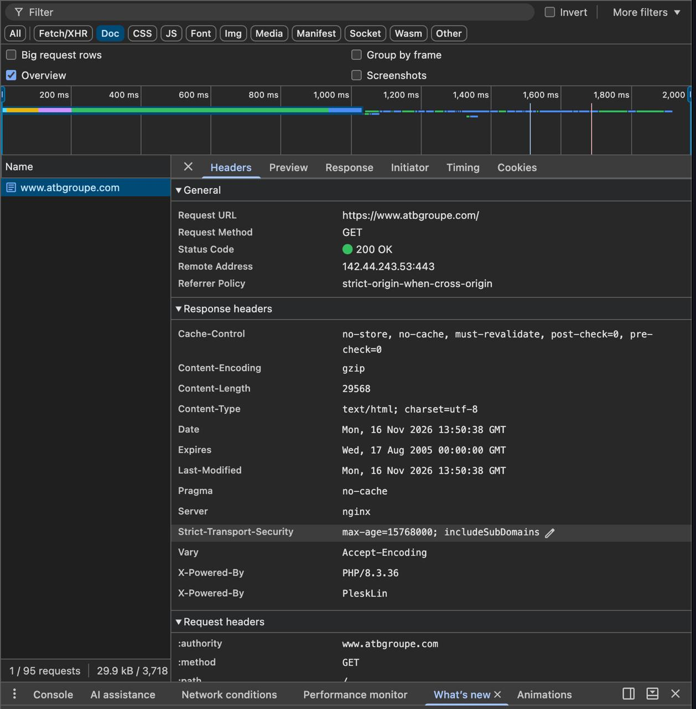
Cache-Control: no-store, no-cache, deux en-têtes X-Powered-By qui révèlent PHP 8.3.36 et Plesk.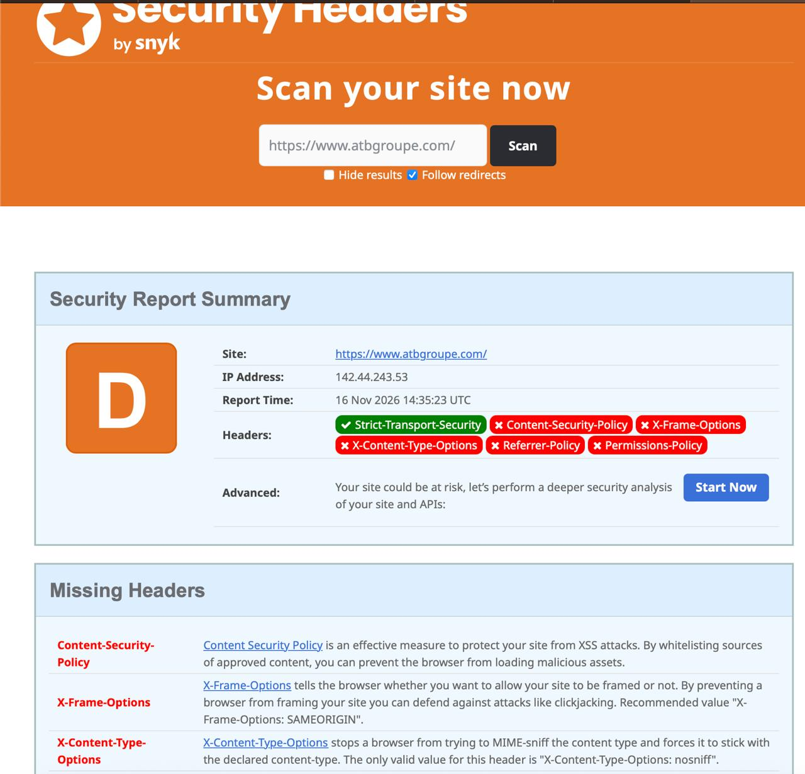
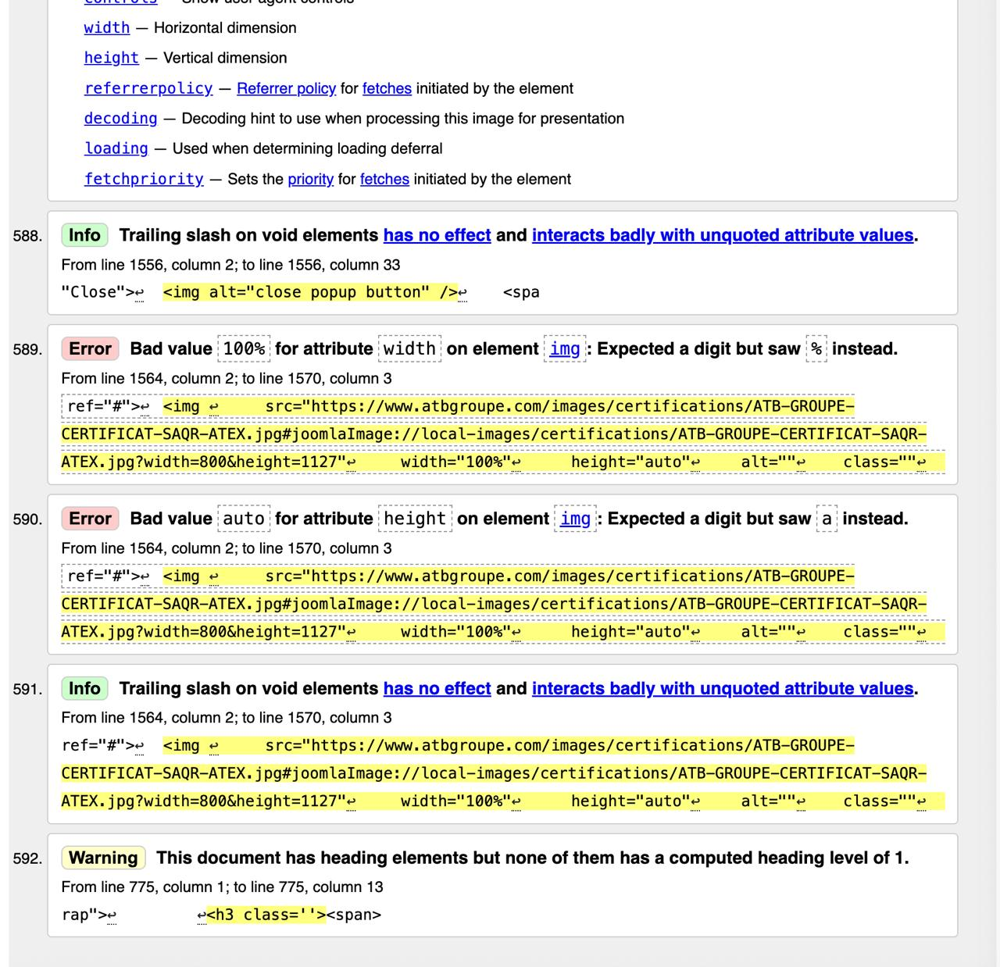
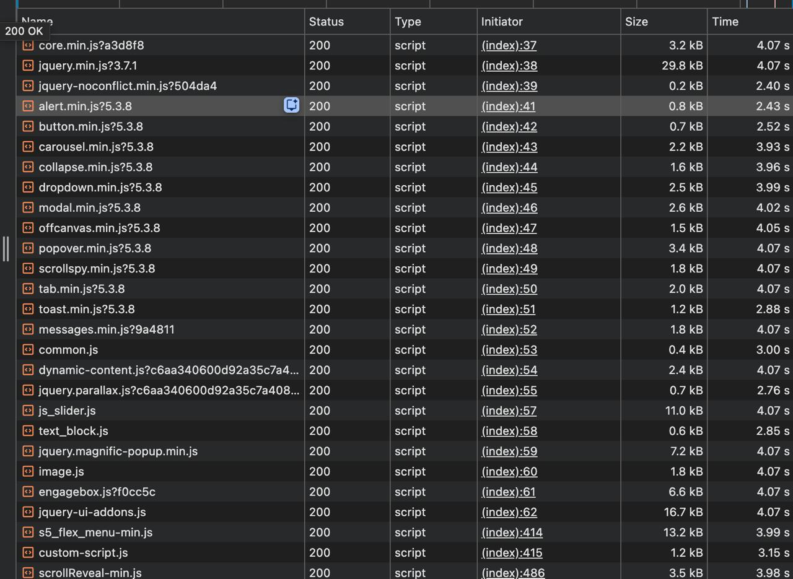
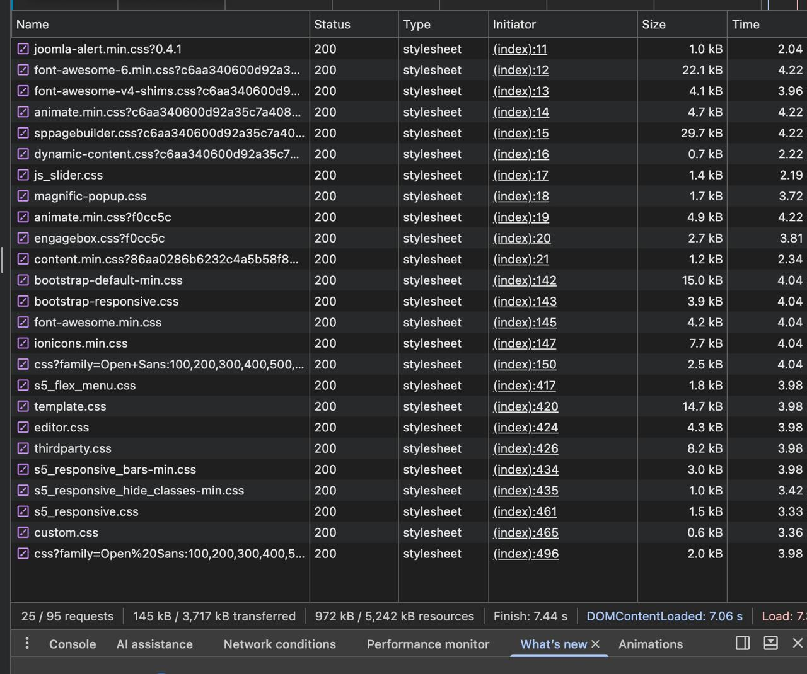
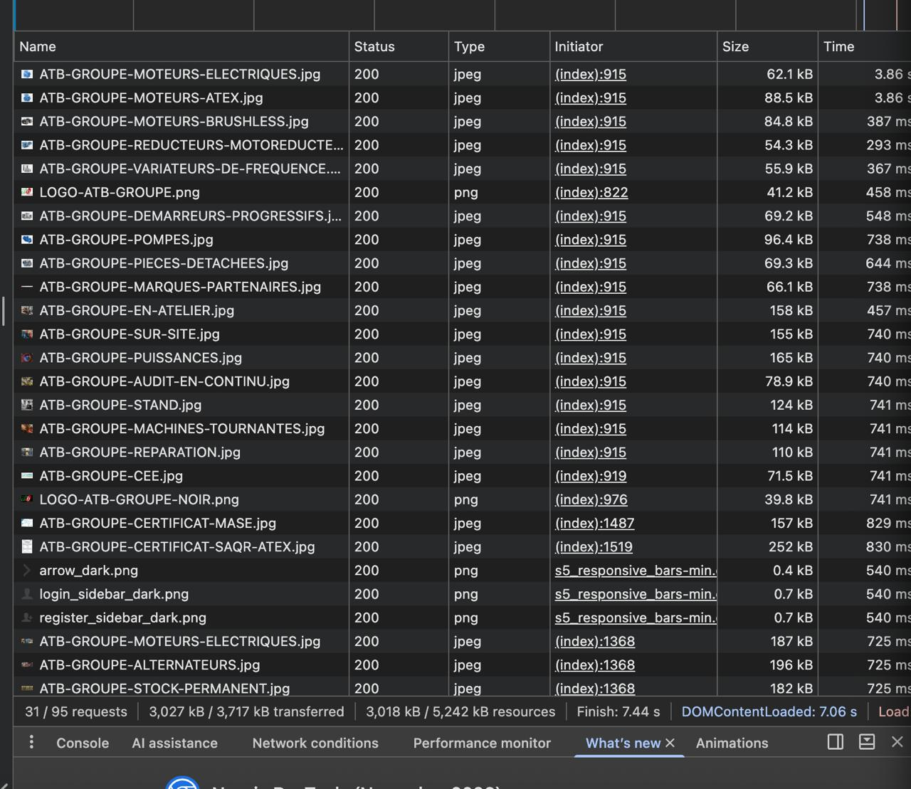
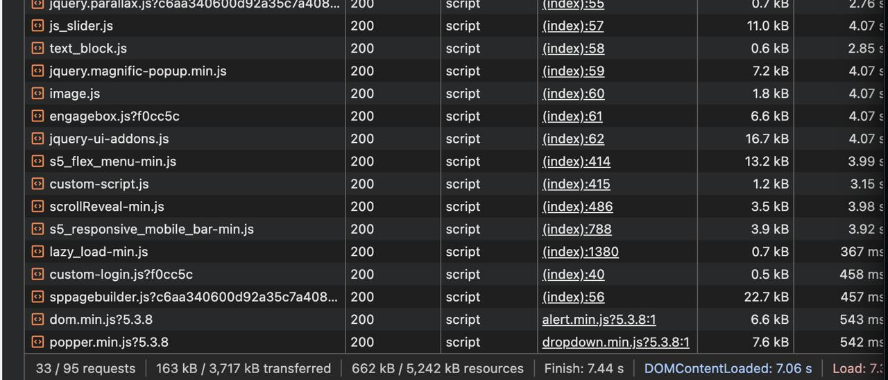
Ou le contact du prestataire actuel si quelqu'un d'autre gère déjà le site.
Pour créer Search Console et vérifier/corriger les fiches Google Maps des 4 agences.
Accès existant ou un abonnement (Ahrefs à partir de 129 $/mois) pour suivre l'évolution dans la durée.
Réalisée en interne : lecture du code de la page, Chrome DevTools (Réseau, Performance), Google PageSpeed Insights, securityheaders.com et le validateur W3C. Toutes les captures de la section précédente viennent de ces outils, sur le site en production.
Je ne suis pas spécialiste du référencement — cette partie a été préparée avec un ami spécialiste SEO, à l'aide de ses outils (Ahrefs, recherches sur google.fr, interrogation de ChatGPT et des aperçus IA de Google). Les chiffres de trafic et de volume de recherche sont des estimations Ahrefs, pas des données Search Console du site : nous n'y avons pas encore accès.
Ce que ce document ne couvre pas : l'accès à Search Console et à la statistique réelle du site (proposition 1 justement), et tout ce qui touche au planning ou au chiffrage du temps de travail — on en reparle séparément une fois les propositions passées en revue ensemble. (Et si on vous demande pourquoi cette page est aussi soignée : disons que le style vient de ma future entreprise de rêve 😄.)